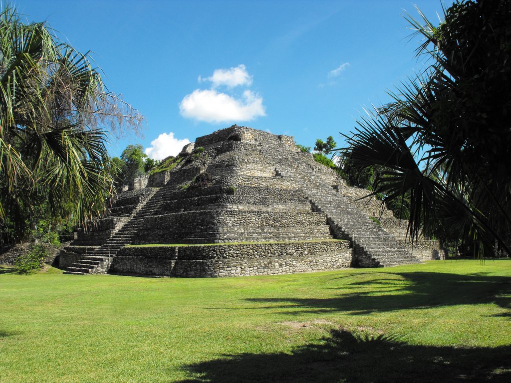
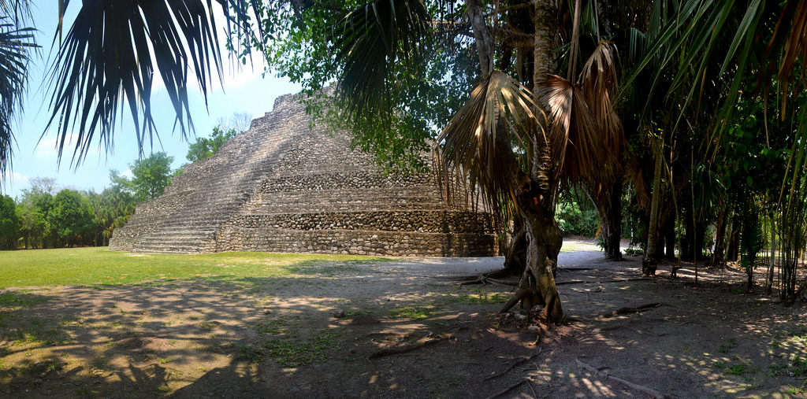
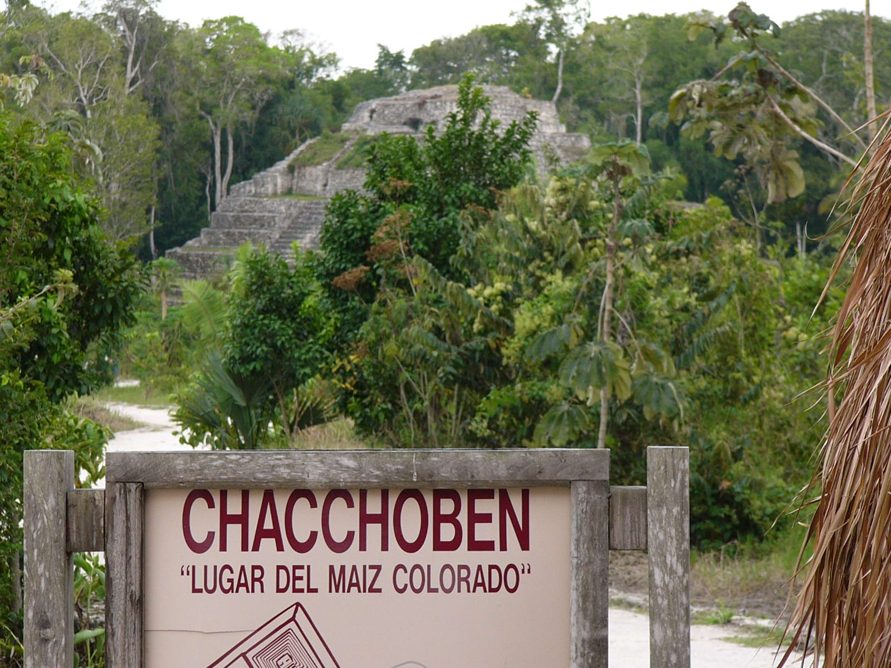

Have you ever wondered about your Mexican heritage? Have you ever wondered about Mexican culture? We have the place for you! Come visit the beautiful Chacchoben ruins in Mexico. Come today and open your real life history book as you discover the brilliant civilization of the past world. We offer Chacchoben ruin tours with native guides. You can also visit ancient temples! Come and discover your past with us down in Chacchoben today!

Photograph of the Chacchoben with a beautiful blue sky.

Photograph of the Chacchoben and the beautiful scenery.

Photograph of the Chacchoben sign.
What to do in Chacchoben!
Ruin tours with native guides
Cultural tours
Archeology tours
Reviews from these happy customers!
"It was truly an amazing experience for the whole family." - Stacy Walker, 44
"The travel agents went out of their way to accommodate our needs. Everyone was so amazing and I will be recommending them to all my friends!" - Kelly Smith, 32
"It really made for a hassle free trip. I love traveling and history so it was amazing to explore the culture. I just got to stop and relax for myself for once." - Tony Reeks, 27